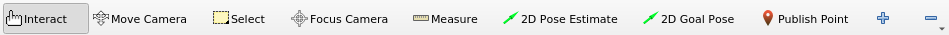

RViz
rviz is a 3D visualization environment. It’s a powerful tool for debugging ROS applications. Run RViz through:
$ ros2 run rviz2 rviz2
RViz Interface

Displays
A display is something that draws in the 3D world (e.g. the robot state). Each display has its own list of properties and its status visible in the Displays panel. Clicking on a display property also visualize a description on the bottom.
To add a display, click the Add button in the Displays panel. The display type details what kind of data this display will visualize. The text box in the middle gives a description of the selected display type. Finally, you must give the display a unique name.
Configurations
Different display configurations can be useful for RViz. Therefore, RViz lets us load and save different configurations.

A configuration contains:
Displays and their properties
Tool properties
Camera type and settings of initial viewpoint.
Views
There are different camera types available in the Views panel. They consists both of different ways to control the camera and different types of projection.

Orbital camera: rotates around a focal point while always looking at it.
FPS (first person) camera: rotate along camera axes
Top-down orthographic: looks down along Z axis of the robot frame, with orthographic view (no perspective)
XY orbit: same as orbital camera, with focus point restricted to the XY plane
Third person follower: The camera maintains a constant viewing angle towards the target frame.
A view consists of:
A Target Frame.
A view configuration: position, orientation, camera type and pose …
A view controller type.
Frames
RViz uses tf transform system for transforming data from the coordinate frame it arrives in into a global reference frame. There are two important coordinate frames in RViz:
Fixed Frame: reference used to denote the “world” frame. For correct results, a fixed frame should not be moving relative to the world.
Target Frame: reference for the camera view.
Tools
Tools are visible in the toolbar:

Move camera: move camera in 3D view
Select: select items displayed in 3D view
2D pose estimate: used to set an initial pose to seed the localization system (sent on the
/initialposeROS topic)…
Using RViz #TODO
There are two main ways to put data into RViz world:
Sensor and state information, using plugins for many kinds of available topics
Visualization markers (primitive shapes)